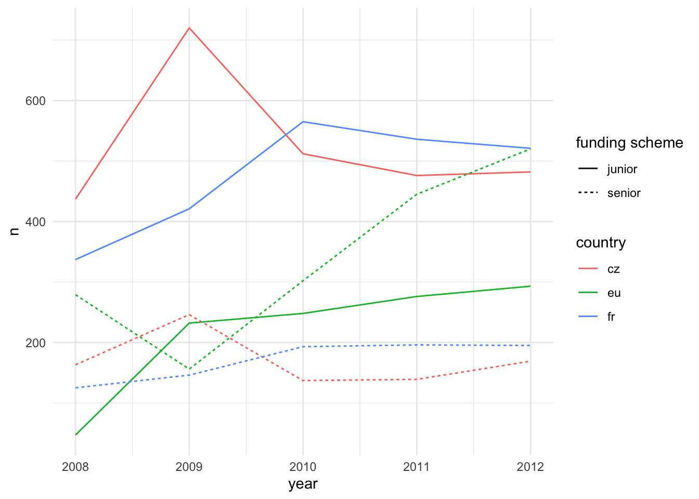
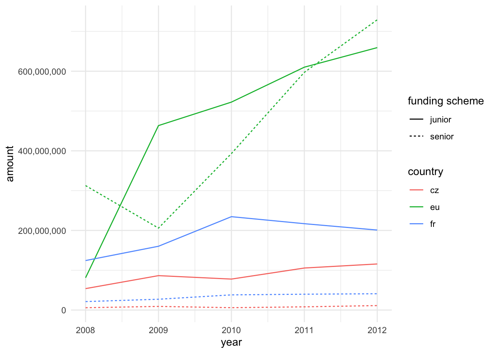
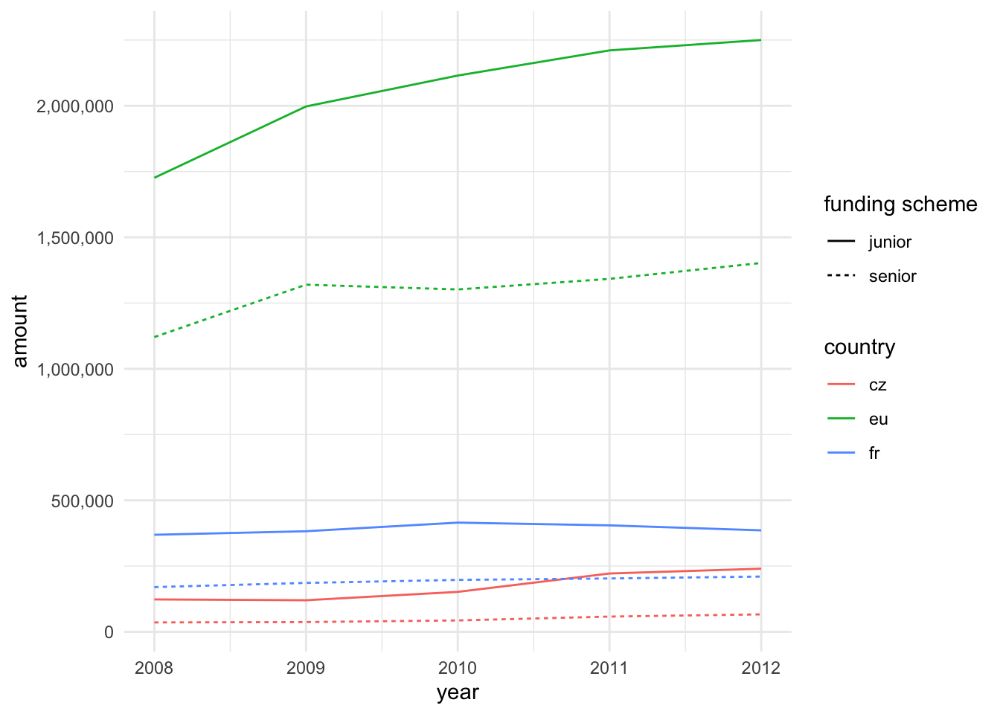
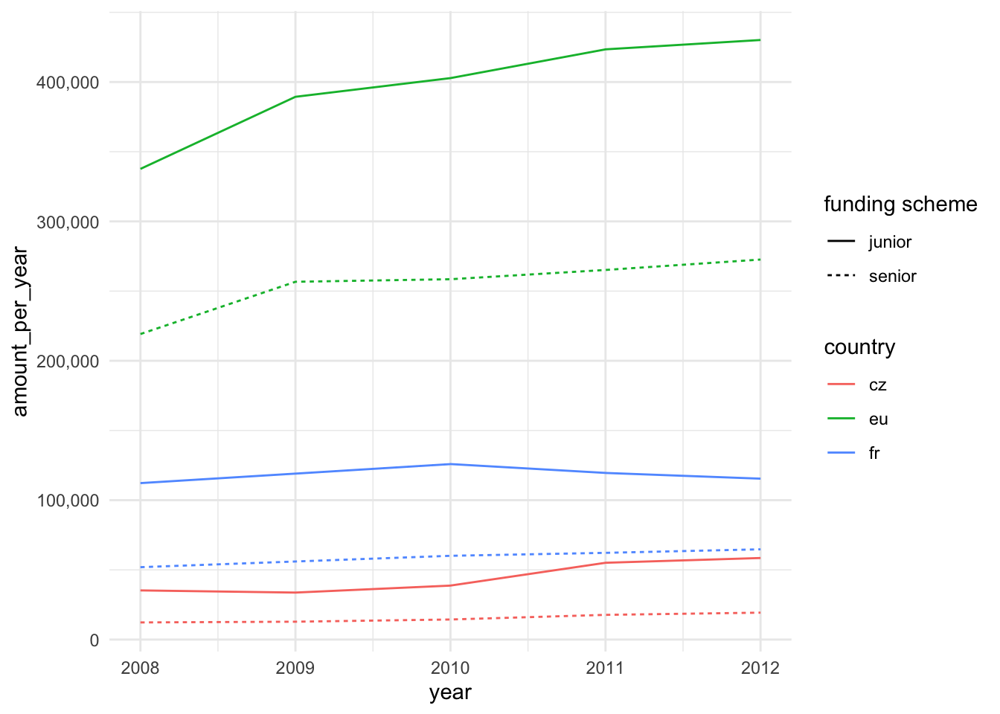
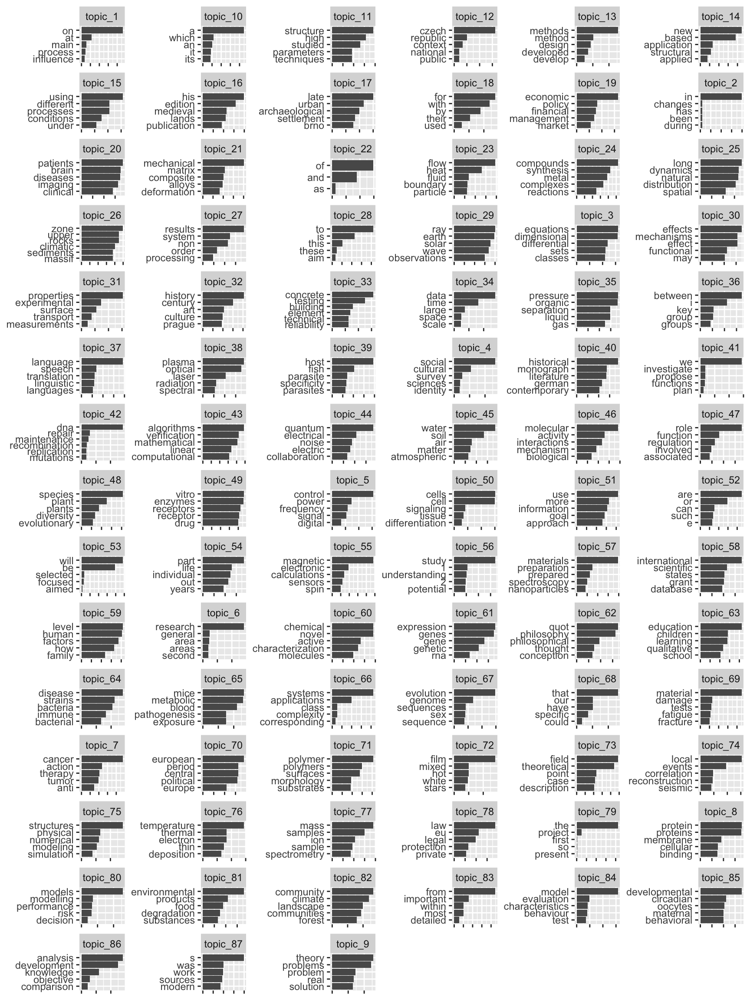
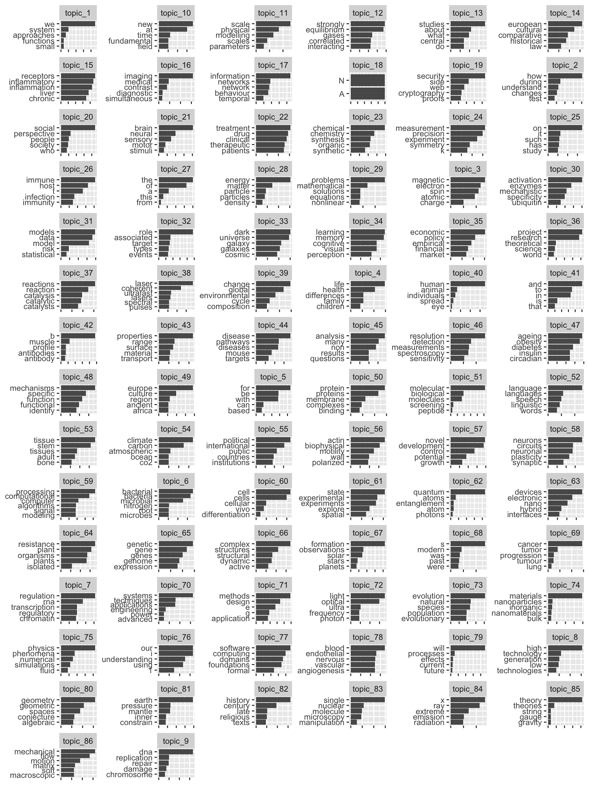
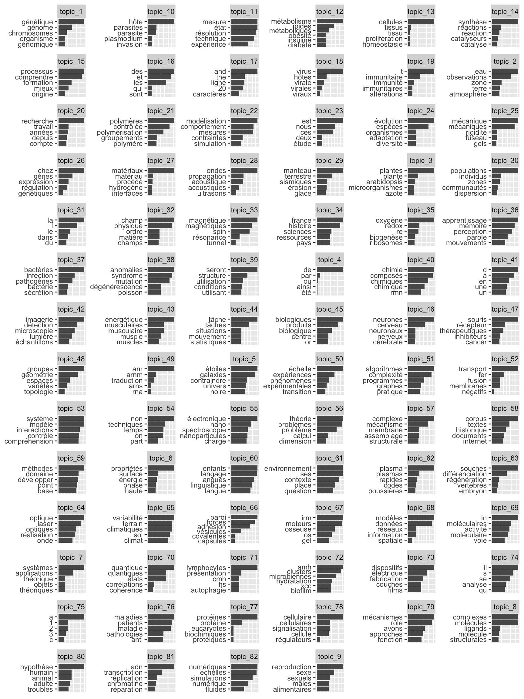
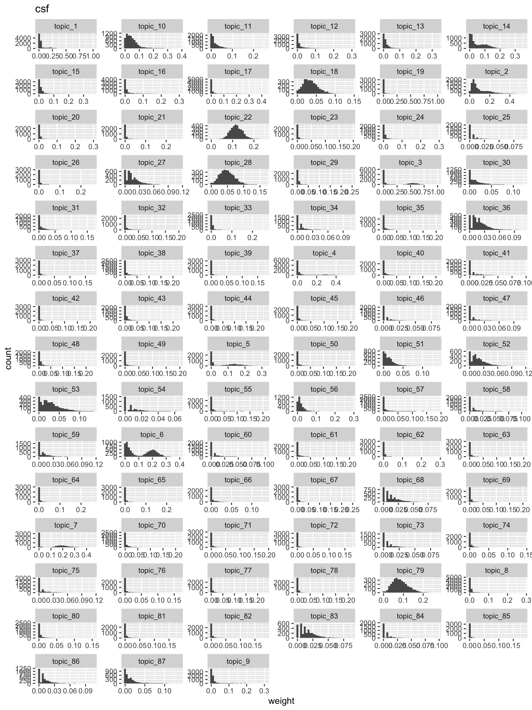
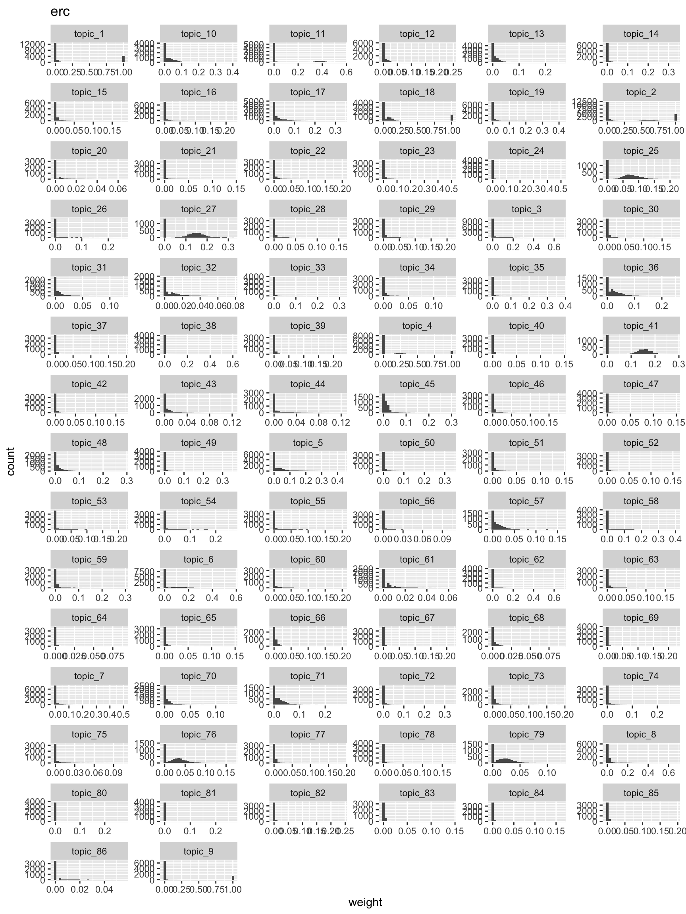
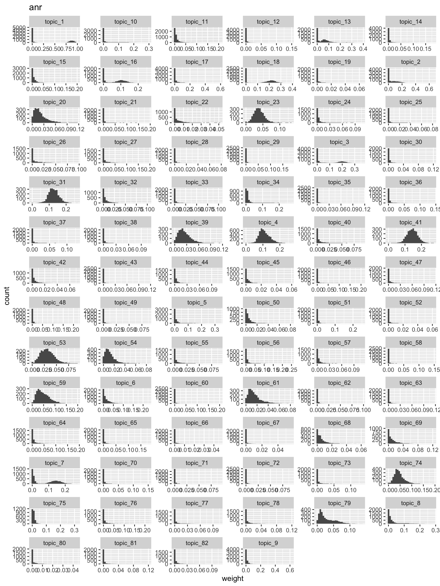

Overview of the data on French, Czech, and EU science funding agencies
Combined dataset
Number of combined observations: 9514
Variables: country, code, title, abstract, year, type, amount, duration
Data by countries and type of competition
Split by country.
| country | n |
|---|---|
| cz | 3481 |
| eu | 2798 |
| fr | 3235 |
Split by country and type of competition.
| country | type | n |
|---|---|---|
| cz | junior | 854 |
| cz | senior | 2627 |
| eu | junior | 1702 |
| eu | senior | 1096 |
| fr | junior | 855 |
| fr | senior | 2380 |
Number of projects in each year by country and competition type.

Amount of funding awarded in each year by country and competition type. For the Czech case, 1 EUR = 25 CZK conversion was used.

Mean amount of funding per project awarded in each year by country and competition type.

Mean amount of funding per one year of project duration awarded in each year by country and competition type.

Topic models
Top 5 words per topic.



Topic distributions
The following graphs show histograms of topic values across documents. Heavy-tailed topics tend to be distinctive, whereas near-normally distributed topics tend to be uniformative.
`stat_bin()` using `bins = 30`. Pick better value with `binwidth`.
`stat_bin()` using `bins = 30`. Pick better value with `binwidth`.
`stat_bin()` using `bins = 30`. Pick better value with `binwidth`.